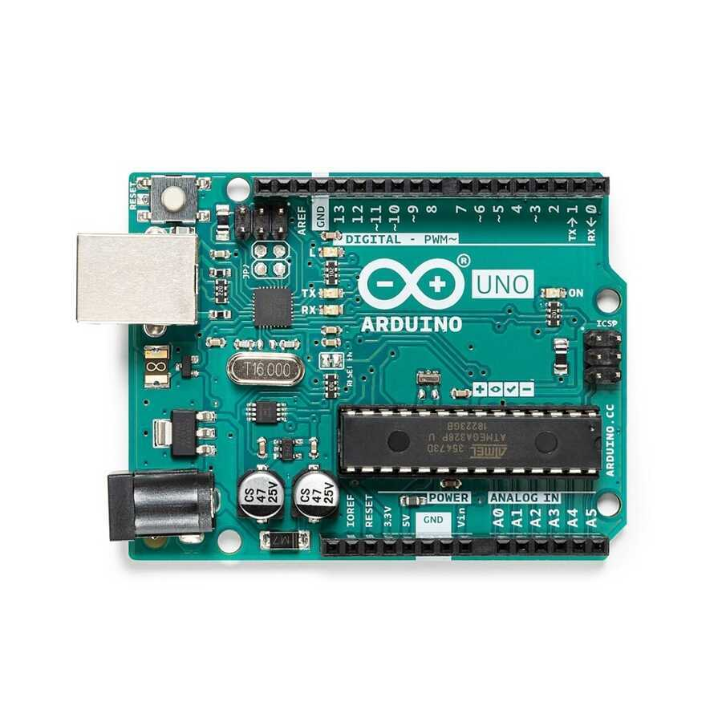

Arduino, tek başına sadece fiziksel bir mikrodenetleyici kartından ibaret değildir; donanım, yazılım (IDE), sensör/modül çeşitliliği, hazır kütüphaneler ve geniş bir geliştirici topluluğundan oluşan açık kaynaklı bir gömülü sistem ekosistemidir.
Geleneksel mikrodenetleyici geliştirme süreçlerinde karşılaşılan karmaşık donanım programlayıcıları ve yüksek maliyetli/zorlu geliştirme ortamlarını basitleştirerek hobi severlerden mühendislere kadar herkesin erişebileceği bir standart sunmuştur.
#include <KutuphaneAdi.h>).Arduino projeleri genel olarak üç temel katmandan oluşur:
if/else) ve döngülerle işlemesi.Her Arduino programı (Sketch), temel olarak iki ana fonksiyondan oluşur. Bu yapı, tüm Arduino kodlarının temel şablonunu oluşturur:
/*
* Proje Adı: Temel Arduino Kod İskeleti
* Açıklama: setup ve loop fonksiyonlarının çalışma mantığı.
*/
// Global değişken tanımlamaları ve kütüphane eklemeleri burada yapılır.
void setup() {
// 1. Defaya mahsus çalıştırılan başlangıç ayarları
// Örn: Pin modlarının belirlenmesi, Seri haberleşmenin başlatılması
// Serial.begin(9600); // Seri haberleşmeyi başlatır
// pinMode(13, OUTPUT); // 13 numaralı pini çıkış olarak ayarlar
}
void loop() {
// Sonsuz döngü: Program çalıştığı sürece bu blok sürekli baştan sona tekrarlanır.
// Örn: Sensör okuma, koşul kontrolü ve çıkış verme işlemleri
// digitalWrite(13, HIGH); // LED'i yak
// delay(1000); // 1 saniye bekle
// digitalWrite(13, LOW); // LED'i söndür
// delay(1000); // 1 saniye bekle
}